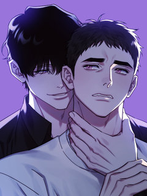
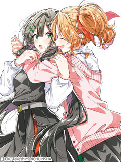
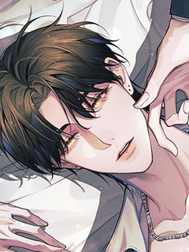
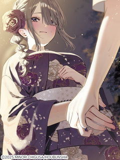
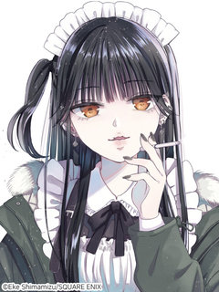
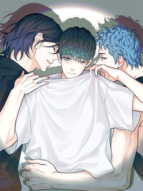
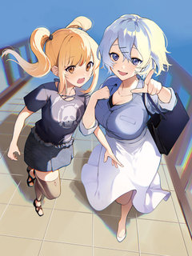
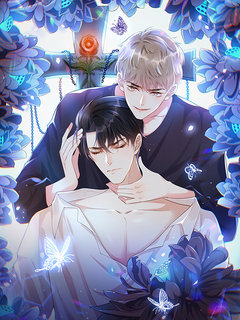
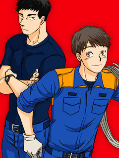

BL·GL 첫사랑·짝사랑 웹툰 추천 TOP 27
BL·GL 작품 중에서 첫사랑, 짝사랑, 짝사랑남, 짝사랑녀 같은 요소가 들어간 작품만 골랐어요. 네이버웹툰·카카오웹툰·레진코믹스에서 조건에 맞는 작품 27개 중 인기 순으로 27개를 골랐어요. 인기 TOP 3: 사랑은 환상! ~슈퍼스타~, 소꿉친구의 가이드가 되었다 [연재], 남보다 못한 사이 [개정판]
2026-09-29 기준 · 성인 작품 제외
내 취향으로 더 좁혀서 추천받기 →-
1
 레진코믹스
레진코믹스사랑은 환상! ~슈퍼스타~
혜성과 도진의 아들인 '박별' 은 예전에는 아이돌 연습생이었으나 현재는 그만두고 평범한 고등학교 생활을 보내고 있다. 갑작스럽게 동생이 생겨 혼란스러운 와중에, 별은 한동안 소원해졌던 소꿉친구 '시우'가 자꾸만 눈에 밟히게 되는데.. 꿈과 우정(?)을 찾는 별이의 반짝반짝 하이틴 성장…
BL·GL짝사랑소꿉친구월드드랍WorldDrop레진코믹스에서 보기 → -
2
![소꿉친구의 가이드가 되었다 [연재] 표지](../../thumbs/lezhin/7011745902996743.jpg) 레진코믹스
레진코믹스소꿉친구의 가이드가 되었다 [연재]
하룻밤으로 D급 가이드에서 S급 가이드가 되었다. 만년 D급 가이드 조이현. 쌍둥이 소꿉친구들이자 A급 에스퍼인 정한세와 정한결의 그늘에 가려져 살다가 단 하룻밤으로 S급 가이드가 되다?!
BL·GL소꿉친구순진수연하남능력수레진코믹스에서 보기 → -
3

레진코믹스남보다 못한 사이 [개정판]
해당 작품은 웹툰 <남보다 못한 사이> 성인 버전의 일부 장면을 수정한 [개정판]입니다.이용에 참고 부탁드립니다. \\
BL·GL소꿉친구친구>연인떡대수미남수레진코믹스에서 보기 → -
4
 레진코믹스
레진코믹스나의 천사를 찾아서
첫눈에 반해 결혼을 약속한 천사 같았던 옆집 여자아이. 10년 뒤 거구의 남성이 되어 돌아오다…!? 미국의 한 작은 마을에서 살고 있는 한국계 미국인 유진 킴. 10년 만에 옆집으로 돌아온 첫사랑 모건 라일리와 재회하지만, 눈앞에 나타난 건 거구의 금발 남성이 된 모건. 유진은 자신이…
BL·GL첫사랑소꿉친구떡대수상처공레진코믹스에서 보기 → -
5
![내 매니저를 소개합니다 [개정판][연재] 표지](../../thumbs/lezhin/7011779942254117.jpg) 레진코믹스
레진코믹스내 매니저를 소개합니다 [개정판][연재]
천사 같은 외모의 대한민국 톱배우, 지현. 지현에게는 7년 동안 자신의 곁을 지키는 매니저, 은호가 있다. 섬세한 외모만큼이나 까다로운 성격인 지현의 예외이자 '유일한 존재'인 곽은호가. 그런 은호에게는 한 가지 비밀이 있다. 바로 친구이자 자신의 배우인 지현을 남몰래 짝사랑하고 있다…
BL·GL짝사랑다정수순정남미남수레진코믹스에서 보기 → -
6
![너의 페로몬이 좋아 [연재] 표지](../../thumbs/lezhin/5425144005328896.jpg) 레진코믹스
레진코믹스너의 페로몬이 좋아 [연재]
외모, 집안, 어느 것 하나 빠지지 않던 베타 윤가람! 갑자기 오메가가 되었다...?! 계속되는 이상증세에 꼬여 드는 알파까지 빠르게 지쳐가는데... 이상하게 오윤 앞에서는 아무렇지 않다. 같은 알파인데, 오윤은 뭐가 다른 거지? 윤가람은 오메가의 삶에 적응할 수 있을까?
BL·GL짝사랑친구>연인성장물설렘폭발레진코믹스에서 보기 → -
7

레진코믹스속삭이듯 사랑을 노래하다
벚꽃 잎 날리는 계절, 우리들은 첫 눈에 반해버리고 말았습니다. 고등학교 입학 첫날, 신입생 히마리는 신입생 환영회에서 공연한 밴드의 보컬 요리에게 첫눈에 반했다는 이름의 동경을 품는다. 히마리는 교내에서 만난 요리에게 그 사실을 전하지만, 올곧게 마음을 전달하는 그녀에게 요리는 첫눈…
BL·GL짝사랑학원물GL설렘폭발레진코믹스에서 보기 → -
8

레진코믹스모든 시선이 나에게 [연재]
업계 1위의 파파라치, 화제배우 임시안이 스폰서를 만나는 현장을 찍으러 갔다가 교통사고를 당한다.깨어나 보니 난 임시안의 몸에 빙의됐고, 베일에 싸여있던 스폰서는 임시안과 사이가 나쁘기로 유명한 인기배우 이현우?!게다가 임시안 이 자식… 스폰서가 한 사람뿐만이 아니다!나만 바라보는 연…
BL·GL짝사랑연예계미인수삼각관계레진코믹스에서 보기 → -
9

레진코믹스편리한 세미프렌드
아싸 고등학생 스우나는 오늘부터 기숙사 생활. 긴장한 채 방에 들어갔더니 그곳에는…… 여자와 진한 스킨십 중인 룸메이트 루카의 모습이! ‘세프’가 없으면 곤란하다는 루카에게 스우나는 무심코 ‘세(미)프(렌드) 계약’을 제안하는데…?
BL·GL친구>연인순진녀동거설렘폭발레진코믹스에서 보기 → -
10
![페이트 메이트 [개정판][연재] 표지](../../thumbs/lezhin/5084486848151552.jpg) 레진코믹스
레진코믹스페이트 메이트 [개정판][연재]
알파인 동시에 오메가인 특이형질 때문에 베타 전용 기숙사에 입소하게 된 세현. 깔끔하고 싹싹한 룸메이트 준후를 만나 운이 좋다고 생각하고 있었는데... 준후도 자신처럼 형질을 숨기고 베타 기숙사에 들어온 것임을 알게 된다. 심지어 준후의 형질은 알파?! 오메가 형질이 불안정한 세현은…
BL·GL짝사랑외유내강수연상수집착물레진코믹스에서 보기 → -
11
![빙의한 소설의 분위기가 위기 [연재] 표지](../../thumbs/lezhin/7011741235394417.jpg) 레진코믹스
레진코믹스빙의한 소설의 분위기가 위기 [연재]
[4회 연재 후 1회 휴재] 친누나가 쓴 소설에 빙의하게 된 ‘나’. 그런데… 소설의 분위기가 조금 이상하다?! 사고로 죽은 누나가 평소에 쌓은 덕으로 인해, 단 하나의 소원을 이룰 수 있게 된 ‘나’는 누나가 가장 아끼던 인물로 살아 보고 싶다는 소원을 빈다. 그런데 내가 악역인 ‘…
BL·GL첫사랑까칠공순정남허당수레진코믹스에서 보기 → -
12
![가든플로라 [개정판][연재] 표지](../../thumbs/lezhin/7011772170810686.jpg) 레진코믹스
레진코믹스가든플로라 [개정판][연재]
[해당 작품은 <가든플로라>의 일부 장면을 편집한 15세 개정판입니다.] #조폭공 #개과천선공 #꽃집사장공 #막무가내수 #연하직진수 #짝사랑수 “나가. 영업 방해하지 말고.” “내가 그동안 아저씨 찾느라 얼마나 고생했는데!!!\\
BL·GL첫사랑짝사랑능글남계략남레진코믹스에서 보기 → -
13
![인과응보 [개정판][연재] 표지](../../thumbs/lezhin/7011761722474474.jpg) 레진코믹스
레진코믹스인과응보 [개정판][연재]
[5회 연재 후 1회 정기 휴재] 대학교 술자리에서 만나 서로에게 이끌려 하룻밤을 보낸 뒤 연인이 된 이주헌과 서강우. 강우는 평범한 연애를 기대했지만, 중요한 순간마다 감정이 결여된 것처럼 거칠고 제멋대로 구는 주헌을 견디다 못해 결국 이별을 고한다. “넌 누굴 좋아할 수 없는 인간…
BL·GL짝사랑상처공다정수개아가공레진코믹스에서 보기 → -
14

레진코믹스동경하는 메이드는 담배가 잘 어울려
제가 동경하는 그 사람은, 담배가 잘 어울리는 메이드였습니다. 선배 메이드 히지리와 그녀를 동경하는 신입 메이드 스우. 히지리를 통해 알게 된 새로운 세상은 두근거림으로 가득한데…?! SNS에서 대인기! 개성넘치는 메이드가 엮어 내는 시가렛 로맨스
BL·GL짝사랑현대물성장물설렘폭발레진코믹스에서 보기 → -
15
![이자율 50% [개정판][연재] 표지](../../thumbs/lezhin/7011761200863486.jpg) 레진코믹스
레진코믹스이자율 50% [개정판][연재]
[매월 10, 20, 30일 연재] 신인 감독 이서림은 최근 골머리를 앓고 있다. 요즘 가장 잘나가는 인기 배우 이선오가 서림의 작품에 캐스팅된 이후 작품 활동에 전혀 참여하지 않고 있기 때문. 이대로라면 투자뿐만 아니라 제작까지 무산될 위기인데... 하지만 서림에겐 비장의 카드가 있…
BL·GL첫사랑순정남현대물미남공레진코믹스에서 보기 → -
16
![테소로 오브 더 가이드 [개정판][연재] 표지](../../thumbs/lezhin/7011761210008340.jpg) 레진코믹스
레진코믹스테소로 오브 더 가이드 [개정판][연재]
이능력자 폭주율이 높기로 소문이 자자한 F12 센터. 그곳으로 발령받게 된 진단 검사관 '백시진'. 첫 출근한 시진은 행정과라며 신분을 숨긴 채, 의도적으로 접근한 A급 가이드 '정태율'을 만나게 된다. \\
BL·GL첫사랑짝사랑강공연상수레진코믹스에서 보기 → -
17
![[비애] 강에 잔물결 표지](../../thumbs/lezhin/4633366548905984.jpg) 레진코믹스
레진코믹스[비애] 강에 잔물결
탄바와 우타가와는 연인 사이. 10년 이상이나 함께 있으면서도, 자신의 남자친구가 너무 멋있어서 감당이 안 되는 우타가와. 한편 탄바는, 한없이 퓨어한 우타가와가 가끔씩 보이는 갭에 푹 빠진 상태. 사소한 일에도 두근거리고, '좋아한다'는 마음은 논스톱으로 상승 중! pixiv에서 대…
BL·GL친구>연인헌신수적극수헌신남레진코믹스에서 보기 → -
18
![롭이어 집사 [연재] 표지](../../thumbs/lezhin/7011786604160902.jpg) 레진코믹스
레진코믹스롭이어 집사 [연재]
세간의 시선 속 옌이는 완벽하고 사려 깊은 오메가 아내였지만, 남편 루상진에게는 그저 능력이 뛰어난 경호원이자 가엾게 여길 가치도 없는 흔해 빠진 토끼 수인일 뿐이었다. 각인이 강제로 지워진 비참한 관계 속에서도 과거 루상진이 다정했던 기억을 붙잡으며, \\
BL·GL짝사랑무심공미남공재벌공레진코믹스에서 보기 → -
19
![헤어진 적 없는 [개정판][연재] 표지](../../thumbs/lezhin/7011749286845557.jpg) 레진코믹스
레진코믹스헤어진 적 없는 [개정판][연재]
집안이 기울고 아르바이트를 전전하던 '서은하'는 길거리에서 우연히 오랜 첫사랑이자 전 여자친구 '한원서'를 만나게 된다. \\
BL·GL첫사랑친구>연인계약연애삼각관계레진코믹스에서 보기 → -
20
 레진코믹스
레진코믹스에구치네 순정 서큐버스
“에로란 대체 뭐야!!!!!” 지식은 있으나 에로를 전혀 이해하지 못하는 만화가 에구치 히비키. 에로란 대체 무엇인지 고민하던 히비키는 마찬가지로 에로에 대해 고민 중이던 서큐버스 미아와 만난다. 어딘가 닮은 두 사람은 ‘진정한 에로’를 이해하기 위해 협력하게 되는데…? 풋내기 만화가…
BL·GL첫사랑짝사랑친구>연인현대물레진코믹스에서 보기 → -
21

레진코믹스텐(TEN) [개정판][연재]
[6회 연재 후 1회 정기휴재] '무엇에 상처를 받았는지도, 정확히 알 수 없었다.' 2군 아이돌이었던 '민지호'의 아이돌 생활은 마음에 혼란만 남기고 끝났다. 그대로 연예계를 떠날 계획이었던 지호는 대타로 나간 예능에서 평소 동경하던 톱배우 '강태연'을 만나 가벼운 스캔들에 휘말린다…
BL·GL첫사랑짝사랑무심공미남공레진코믹스에서 보기 → -
22
![올 어바웃 유어 러브 [개정판][연재] 표지](../../thumbs/lezhin/5964443436122112.jpg) 레진코믹스
레진코믹스올 어바웃 유어 러브 [개정판][연재]
오랜만에 나간 동창회에서 이원은 전 여자친구의 청첩장을 받는다. 복잡한 마음인 이원 앞에 나타난 태은은 갑자기 그에게 원나잇 제안을 한다. 얼떨결에 태은과 자게 된 이원은 그 후로도 태은과 밤을 보내게 되고, 함께하는 시간이 길어질 수록 태은에 대한 호기심은 더욱 커진다. 같은 학교에…
BL·GL첫사랑짝사랑친구>연인BL레진코믹스에서 보기 → -
23

레진코믹스마감 전에는 백합이 순조롭다
시골을 뛰쳐나온 고등학생 가출 소녀, 시라카와 아유. 대책도 없이 도쿄에 첫걸음을 내딛자마자 경찰한테 불심 검문을 당해 사촌 언니인 편집자 시라카와 미야코한테 맡겨지게 된다. 상습 마감 파괴범이자 미야코가 담당하는 인기 소설가, 카이로우 히카리의 가사도우미 \u0026 감시역 아르바이…
BL·GL짝사랑연애동거GL레진코믹스에서 보기 → -
24

레진코믹스돌아와줘 [연재]
현우와 지혁의 결혼 후 3년이라는 시간이 흘렀지만, 지혁의 모진 냉대로 현우에게 남은 건 고통과 상처뿐. 오랫동안 끼고 있던 반지가 끊어진 순간, 현우의 모든 미련도 거품처럼 사라진다. 한편, 이혼 후 뒤늦게 과거의 진실을 알게 된 지혁은 현우를 찾아가지만, 그는 나약했던 과거의 모습…
BL·GL짝사랑현대물능욕공BL레진코믹스에서 보기 → -
25
 레진코믹스
레진코믹스악역 영식으로 전생했지만, 소꿉친구의 엄마♂가 되겠어!
BL 소설 속 세계에, 처형 엔딩이 확정인 불쌍한 악역 영식으로 환생한 미카(전생은 동인남). 죽음을 피하기 위해 미카는 소설의 메인 캐릭터이자 소꿉친구인 샤를을, 건전한 완벽 동정남인 채로 자라도록 '엄마' 역할을 하며 키우기로 결심한다! 그렇게 필사적인 교육 덕분에 샤를은 건강하고…
BL·GL첫사랑짝사랑소꿉친구판타지레진코믹스에서 보기 → -
26

레진코믹스하노쿠리
* 본 작품은 동인지입니다. 작은 마을 소방서에서 함께 근무하는 이혼남 선배 하노(38세)와 그를 짝사랑하는 후배 쿠리하라(24세). 주변을 휘말리게 하면서도 조금씩 앞으로 나아가는(?) 두 사람의 사랑 이야기. ⓒTsukishima Tento/No.9
BL·GL짝사랑성실수츤데레공연상공레진코믹스에서 보기 → -
27
![신복(臣僕) [연재] 표지](../../thumbs/lezhin/7011776242107669.jpg) 레진코믹스
레진코믹스신복(臣僕) [연재]
황제가 중병에 걸렸으나, 슬하에 자식이 없어 황족 중 가장 기초가 없는 아이를 태자로 세웠다. 이에 10살 서승재는 태자가 됐고, 안기연은 태부가 되어, 태자에게 나라와 백성을 다스리는 법을 가르쳤다. 서승재는 점점 안기연에게 의존하게 되었고, 의존하던 마음은 변질되어 자신을 돌봐주던…
BL·GL짝사랑미인수궁중로맨스연하남레진코믹스에서 보기 →